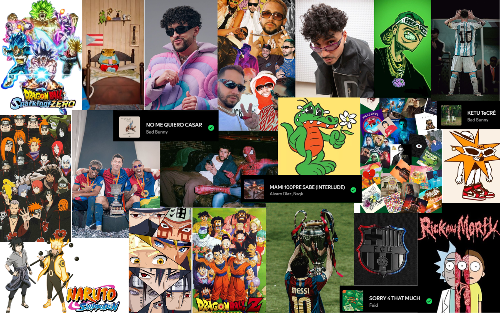

Cosas que me gustan
Soy una persona con muchos gustos como para escoger solo uno.
Primero vamos con lo musical ya que quien en la actualidad no escucha música, me gusta diseñar y programar con música en mi top 1 seria Bad Bunny ya que lo escucho desde el día uno, cuando a la gente no le gustaba por como se expresaba, por mucho tiempo escuchaba solo a bad bunny hasta que me deje envolver por más cantates Como.
-
1. Bad Bunny
2. Mora
3. Alvaro Diaz
4. Rels b
5. Feid
El anime pero no cualquier anime me gustan mucho los que tratan de peleas Principal Dragon ball ya que con este crecimos bastantes, segundo naruto ya que su historia es hermosa y si la entiendes te deja muchas enseñanzas esos son los que más me gustan, obviamente he visto muchas más animaciones.
-
1. Dagron ball
2. Naruto
3. berserk
4. Los 7 pecados capitales
5. one punch man
No cabe mencionar mi amor por mi equipo no soy muy fan del futbol pero todos en casa nacemos siendo de un equipo por nuestros padres asi que gane o pierda siempre fiel a mi barca.
